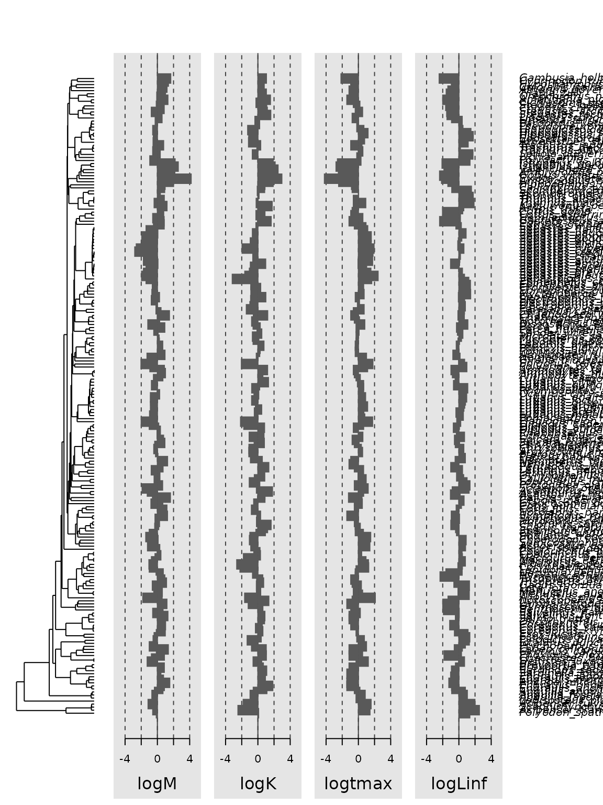

Phylogenetic comparative methods in fisheries science
James T. Thorson
Source:vignettes/fisheries.Rmd
fisheries.RmdPhylogenetic comparative methods (PCM) are rarely in fisheries science, perhaps due to a lack of familiarity with methods and software among fisheries scientists. This underuse is surprising, given that fisheries science and management strongly depends on foundational results from comparative methods regarding fish productivity and life-history parameters, e.g., for defining proxies for biological reference points and informing hard-to-estimate demographic rates such as stock-recruit and natural mortality parameters.
Preparing the Then et al. mortality database
To demonstrate the potential role for PCM in fisheries science, we re-analyze a foundational dataset compiled by Then et al.. We specifically download the file “Mlifehist_ver1.0.csv” and then include a copy as a data object in package phylosem to simplify the following demonstration. This demonstration then provides basic syntax and output from PCM, showing the relationship between natural mortality rate, longevity, and growth parameters.
To do so, we first load a phylogeny for fishes using package fishtree, which includes several versions of a phylogeny for fishes develoepd by Rabosky et al.. We then associate all trait data with a tip label from that phylogeny, and provide convenient names for the modeled variables.
# Load packages
library(phylosem)
library(fishtree)
# Download tree
out = fishtree_complete_phylogeny()
tree = out[[1]]
# Load data object
data( Mlifehist_ver1_0 )
Data = Mlifehist_ver1_0
# Reformat to match tree$tip.label
Data$Genus_species = factor( paste0(Data$Genus, "_", Data$Species) )
# Drop duplicates ... not dealing with variation among stocks within species
Data = Data[match(unique(Data$Genus_species),Data$Genus_species), ]
# log-transform to simplify later syuntax
Data = cbind( Data, "logM" = log(Data[,'M']),
"logK" = log(Data[,'K']),
"logtmax" = log(Data[,'tmax']),
"logLinf" = log(Data[,'Linf']) )
# Identify species in both datasets
species_to_use = intersect( tree$tip.label, Data$Genus_species )
species_to_drop = setdiff( Data$Genus_species, tree$tip.label )
# Drop tips not present in trait-data
# Not strictly necessary, but helpful to simplify later plots
tree = ape::keep.tip( tree, tip=species_to_use )
# Drop trait-data not in phylogeny
# Necessary to define correlation among data
rows_to_use = which( Data$Genus_species %in% species_to_use )
Data = Data[rows_to_use,]
# Only include modeled variables in trait-data passed to phylosem
rownames(Data) = Data$Genus_species
Data = Data[,c('logM','logK','logtmax','logLinf')]Fitting and selecting among phylogenetic structural equation models
We then define a path diagram specifying a set of linkages among variables. In the following, we use a path diagram that ensures that mortality rate is statistically independent of growth, conditional upon a measurement for longevity. This specification ensures that, if longevity is available, then it is the sole information used to predict mortality rate. However, if longevity is not available, the model reverts to predicting mortality from growth parameters.
We then fit this model using phylogenetic structural equation models. We specifically apply a grid-search across the eight models formed by any combination of modeled transformations of the phylogenetic tree. We then use marginal AIC to select a model, and list estimated path coefficients.
# Specify SEM structure
sem_structure = "
logK -> logtmax, b1
logLinf -> logtmax, b2
logtmax -> logM, a
"
# Grid-search model selection using AIC for transformations
Grid = expand.grid( "OU" = c(FALSE,TRUE),
"lambda" = c(FALSE,TRUE),
"kappa" = c(FALSE,TRUE) )
psem_grid = NULL
for( i in 1:nrow(Grid)){
psem_grid[[i]] = phylosem( data=Data,
tree = tree,
sem = sem_structure,
estimate_ou = Grid[i,'OU'],
estimate_lambda = Grid[i,'lambda'],
estimate_kappa = Grid[i,'kappa'],
control = phylosem_control(quiet = TRUE) )
}
# Extract AIC for each model and rank-order by parsimony
Grid$AIC = sapply( psem_grid, \(m) AIC(m) )
Grid = Grid[order(Grid$AIC,decreasing=FALSE),]
# Select model with lowest AIC
psem_best = psem_grid[[as.numeric(rownames(Grid[1,]))]]| OU | lambda | kappa | AIC |
|---|---|---|---|
| FALSE | TRUE | TRUE | 1552.940 |
| FALSE | TRUE | FALSE | 1553.164 |
| TRUE | TRUE | TRUE | 1559.502 |
| TRUE | FALSE | TRUE | 1561.424 |
| TRUE | TRUE | FALSE | 1563.372 |
| FALSE | FALSE | TRUE | 1643.863 |
| TRUE | FALSE | FALSE | 1717.509 |
| FALSE | FALSE | FALSE | 2358.137 |
| Path | VarName | Estimate | StdErr | t.value | p.value |
|---|---|---|---|---|---|
| NA | Intercept_logM | 1.668 | 0.318 | 5.250 | 0.000 |
| NA | Intercept_logK | -1.759 | 0.566 | 3.107 | 0.002 |
| NA | Intercept_logtmax | -0.575 | 0.655 | 0.878 | 0.380 |
| NA | Intercept_logLinf | 6.559 | 0.445 | 14.742 | 0.000 |
| logK -> logtmax | b1 | -0.448 | 0.067 | 6.716 | 0.000 |
| logLinf -> logtmax | b2 | 0.407 | 0.086 | 4.731 | 0.000 |
| logtmax -> logM | a | -1.022 | 0.037 | 27.732 | 0.000 |
| logM <-> logM | V[logM] | 0.056 | 0.014 | 3.966 | 0.000 |
| logK <-> logK | V[logK] | 0.105 | 0.026 | 4.047 | 0.000 |
| logtmax <-> logtmax | V[logtmax] | 0.078 | 0.019 | 4.029 | 0.000 |
| logLinf <-> logLinf | V[logLinf] | 0.082 | 0.020 | 4.122 | 0.000 |
Visualizing output
Finally, we can convert output to formats from other packages, and use existing and third-party PCM packages to plot, query, and post-process output.
# Plot path diagram
my_fitted_DAG = as_fitted_DAG(psem_best)
plot(my_fitted_DAG, type="color")
# Total, direct, and indirect effects
my_sem = as_sem(psem_best)
effects(my_sem)
#>
#> Total Effects (column on row)
#> logK logtmax logLinf
#> logtmax -0.4480233 0.000000 0.4073488
#> logM 0.4579994 -1.022267 -0.4164192
#>
#> Direct Effects
#> logK logtmax logLinf
#> logtmax -0.4480233 0.000000 0.4073488
#> logM 0.0000000 -1.022267 0.0000000
#>
#> Indirect Effects
#> logK logtmax logLinf
#> logtmax 0.0000000 0 0.0000000
#> logM 0.4579994 0 -0.4164192We also show how to plot output using phylosignal, although it is currently unavailable on CRAN and therefore commented out:
# Load for plotting,
# https://r-pkgs.org/vignettes.html#sec-vignettes-eval-option
library(phylosignal)
# Plot using phylobase
my_phylo4d = as_phylo4d( psem_best )
barplot(my_phylo4d)
Sensitivity to using taxonomic tree
After analysis, we can also conduct sensivity analyses. Here, we show how to construct a taxonomic tree and use this in place of phylogenetic information. As before, this requires some code to reformat the data and then the statistical analysis is simple to specify. The estimated path coefficients are very similar to estimates when using phyogeny.
library(ape)
Data = Mlifehist_ver1_0
# Make taxonomic factors
Data$Genus_species = factor( paste0(Data$Genus, "_", Data$Species) )
Data$Genus = factor( Data$Genus )
Data$Family = factor( Data$Family )
Data$Order = factor( Data$Order )
# Make taxonomic tree
tree = ape::as.phylo( ~Order/Family/Genus/Genus_species, data=Data, collapse=FALSE)
tree$edge.length = rep(1,nrow(tree$edge))
tree = collapse.singles(tree)
tmp = root(tree, node=ape::Ntip(tree)+1 )
# Drop duplicates ... not dealing with variation among stocks within species
Data = Data[match(unique(Data$Genus_species),Data$Genus_species), ]
# log-transform to simplify later syuntax
Data = cbind( Data, "logM" = log(Data[,'M']),
"logK" = log(Data[,'K']),
"logtmax" = log(Data[,'tmax']),
"logLinf" = log(Data[,'Linf']) )
# Only include modeled variables in trait-data passed to phylosem
rownames(Data) = Data$Genus_species
Data = Data[,c('logM','logK','logtmax','logLinf')]
# Fit model
psem_taxon = phylosem( data=Data,
tree = tree,
sem = sem_structure,
estimate_ou = TRUE,
control = phylosem_control(quiet = TRUE) )
# Plot path diagram
my_fitted_DAG = as_fitted_DAG(psem_taxon)
plot(my_fitted_DAG, type="color")